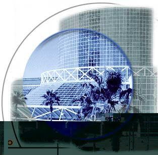
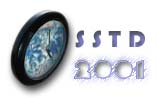
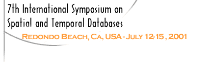

 |
|||||
 |
 |
||||
In association with:
Sponsored by:
|
The Seventh International Symposium on Spatial and Temporal Databases, SSTD'2001, was held in Redondo Beach, Los Angeles, CA, on July 12-15th, 2001. The Symposium brought together leading researchers and developers in the area of spatial, temporal, and spatio-temporal data management to discuss the state-of-the-art in research and applications, and to start setting future research directions. The steering committee for the conference series on spatial databases, SSD, has chosen to extend the scope of the conference to cover temporal and spatio-temporal data management, in addition to spatial data management. The primary focus of SSTD'2001 was on new and original research results in the areas of theoretical foundations, design, implementation, and applications of spatial and temporal database technology, as well as experience reports from application specialists and the commercial community that describe lessons learned in the development, operation, and maintenance of actual systems in practical and innovative applications. The goal was to exchange research ideas and results which will initially contribute to the academic arena, but may also benefit the commercial community in the near future and encourage a dialog between practitioners and researchers. The previous SSD conference was held in Hong Kong (1999). The next SSTD conference will be held in Santorini, Greece in 2003. For more info contact: ytheod@unipi.gr June 6th, 2001
May 14th, 2001
April 2001
February 14th, 2001
February 8th, 2001
February 5th, 2001
January 31st, 2001
January 17th, 2001
For further information please contact: sstd01@cs.ucr.edu
|